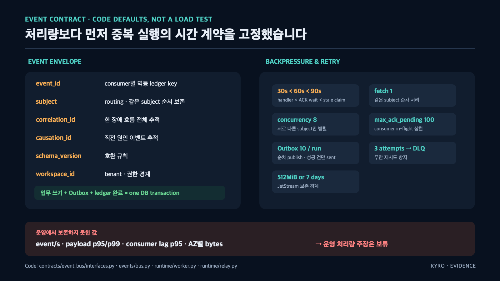

DB 는 바뀌었는데 이벤트만 사라질 때
상태를 바꾸고 이벤트를 발행하는 코드는 두 일을 합니다. 문제는 이 두 일이 한 번에 성공하거나 한 번에 실패하지 않는다는 것입니다.
1) DB 커밋 성공 → 이벤트 발행 전에 프로세스 죽음 = 이벤트 유실
2) 이벤트 발행 성공 → DB 커밋 실패 = 없는 일이 전파됨
Kyro 에서 이벤트 하나가 사라지면 뒤에 있는 판정 · 복구 · 알림이 전부 침묵합니다. 시스템은 멀쩡해 보이는데 아무 일도 안 하는, 제일 찾기 어려운 종류의 고장입니다.
해결: 이벤트를 DB 에 먼저 적는다
발행을 트랜잭션 밖으로 빼는 대신, 보낼 이벤트를 상태 변경과 같은 트랜잭션 안에서 outbox 테이블에 기록합니다. 커밋되면 상태와 이벤트가 함께 존재하고, 롤백되면 함께 사라집니다. 어긋날 방법이 없습니다.
별도의 relay 가 outbox 를 읽어 NATS JetStream 으로 발행합니다. 업무 쓰기와 outbox 기록이 트랜잭션 하나로 묶이는 계약을 그림으로 정리하면 이렇습니다.

그림의 핵심은 한 줄입니다. 업무 쓰기 + outbox 기록 + 처리 원장 완료가 DB 트랜잭션 하나 안에 있다 — 여기가 어긋나면 나머지 어떤 장치도 소용없습니다.
[서비스] --같은 트랜잭션--> [상태 테이블 + outbox 테이블]
│
[relay] --선점(lease)--> 읽기 --> JetStream 발행 --> 발행 완료 표시
relay 가 여러 개면 누가 보내나
relay 를 한 대만 두면 그게 단일 장애점입니다. 여러 대를 두면 같은 행을 두 번 보낼 수 있습니다.
행을 가져갈 때 lease_id 와 leased_until 을 함께 기록합니다. 임대 시간이 지나지 않은 행은 다른 relay 가 건드리지 않고, 임대가 만료된 행만 다시 가져갑니다. 죽은 relay 가 잡고 있던 행도 시간이 지나면 자동으로 풀립니다.
그래도 중복은 생긴다
발행 직후, 완료 표시 직전에 relay 가 죽으면 재시작 후 같은 이벤트를 또 보냅니다. 이건 구조상 막을 수 없어서 받는 쪽에서 무해하게 만듭니다.
- 발행 시
Nats-Msg-Id에 이벤트 고유 번호를 실어, JetStream 의 중복 제거 창(24시간) 안에서 서버가 걸러냅니다 - 소비자 응답 대기(
ack_wait)는 핸들러 제한 시간의 2배인 60초로, 동시 미확인 메시지는 100건으로 묶었습니다. 처리가 끝나기 전에 재전송이 겹치지 않게 하는 값입니다
반복 실패는 따로 모은다
같은 이벤트가 계속 실패하면 재시도만으로는 답이 없습니다. 횟수를 넘긴 이벤트는 DLQ 로 옮기고 흐름은 계속 돌게 했습니다. 막힌 한 건이 뒤의 만 건을 세우는 걸 막는 장치입니다.
확인할 수 있는 것
- outbox 저장소:
src/packages/storage/repositories/outbox.py - relay:
src/packages/runtime/relay.py - 중복 제거 창 설정:
src/packages/contracts/event_bus/subjects.py
한계
멱등 처리는 이벤트 단위입니다. 핸들러가 내부에서 외부 API 를 부르는 경우 그 호출의 멱등성은 각 핸들러가 따로 책임집니다.